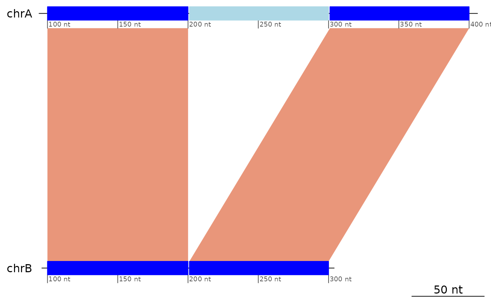
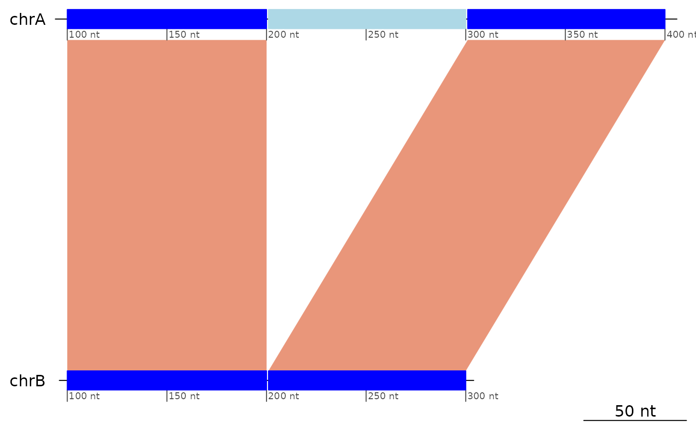

Plots the mapping between a pair of chromosomes using the
genoPlotR::plot_gene_map function. One sequence feature (usually a
chromosome) is selected from the target genome. The corresponding sequence
feature on the query genome is either chosen automatically (being the one
with the largest fraction of the mappings) or given as a parameter.
Usage
plotApairOfChrs(
gb,
chrT = NULL,
chrQ = NULL,
dna_seg_scale = TRUE,
dna_seg_labels = NULL,
...
)Arguments
- gb
A
GBreaksobject.- chrT
A sequence name on the target genome. Defaults to the first sequence level of the
gbobject.- chrQ
(Optional) A sequence name on the query genome. Defaults to the longest cumulative match on
chrT.- dna_seg_scale
Plot coordinats and a scale bar (defaults to
TRUE).- dna_seg_labels
A character vector to override default labels for sequence names.
- ...
Further arguments are passed to
plot_gene_map.
Value
Plots to the active device and returns and oma::oma_layout object
like the genoPlotR::plot_gene_map function.
Note
In this kind of plot, the ranges from the selected sequence on the target genome that are not mapped to the query sequence are not displayed.
See also
Other genoPlotR functions:
gb2comp(),
gb2dna_seg(),
gb2xlim(),
gr2dna_seg()
Other plot functions:
bp_heatmap(),
bp_pair_analysis(),
feature_coverage(),
makeOxfordPlots()
Other Structural variants:
StructuralVariants,
flagDoubleInversions(),
flagInversions(),
flagPairs(),
flagTranslocations()
Examples
plotApairOfChrs(exampleInversion)
 plotApairOfChrs(exampleDeletion)

# Labels can be overriden.
plotApairOfChrs(exampleDeletion, dna_seg_labels = c("over...", "...ridden"))
plotApairOfChrs(exampleDeletion)

# Labels can be overriden.
plotApairOfChrs(exampleDeletion, dna_seg_labels = c("over...", "...ridden"))